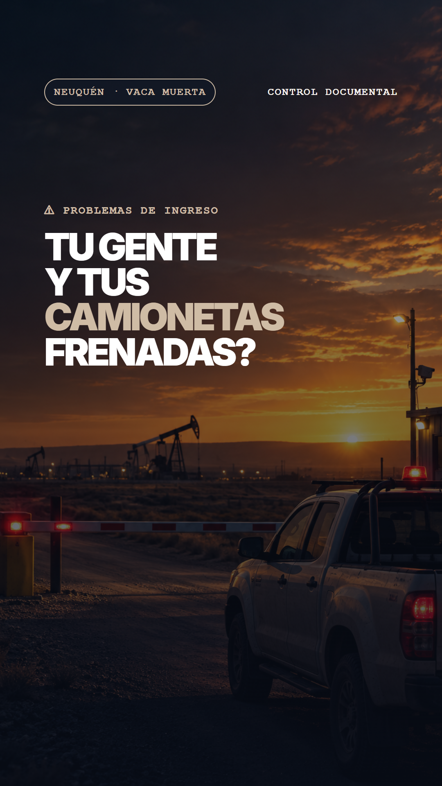
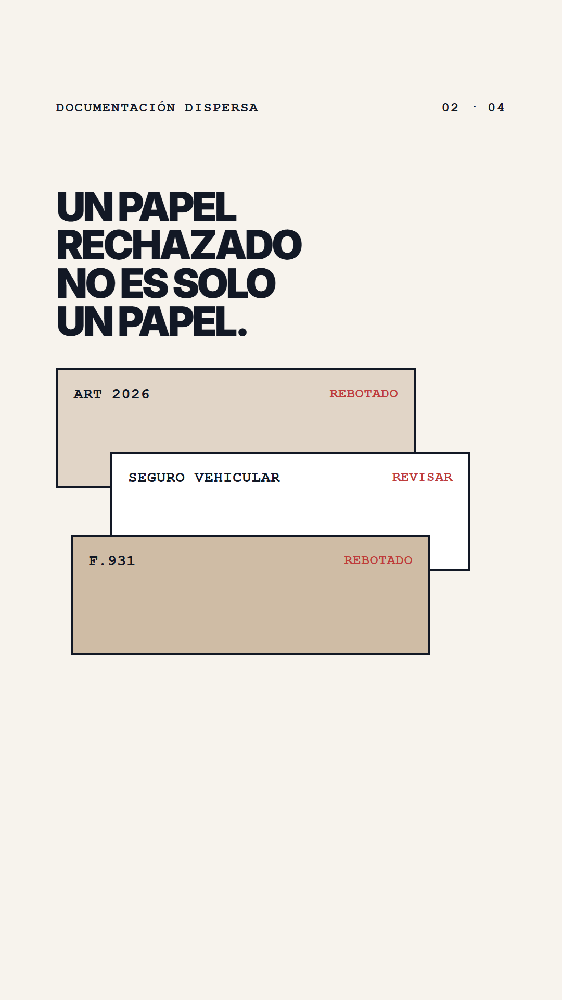
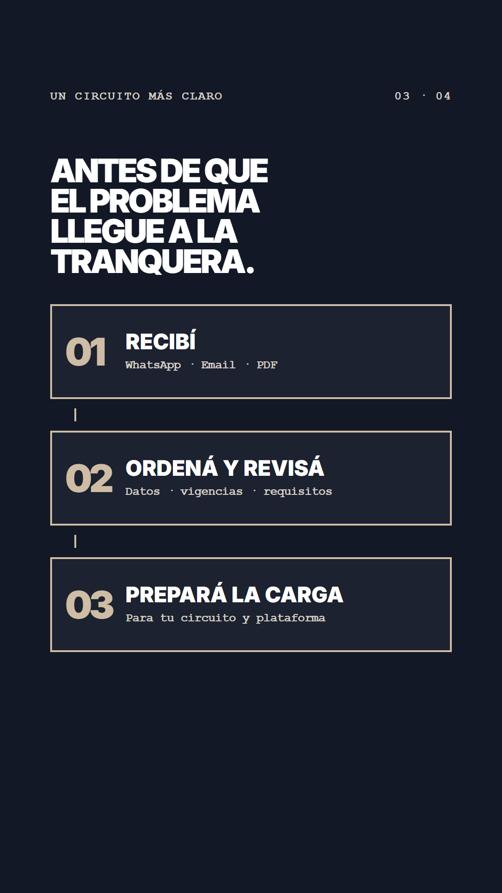
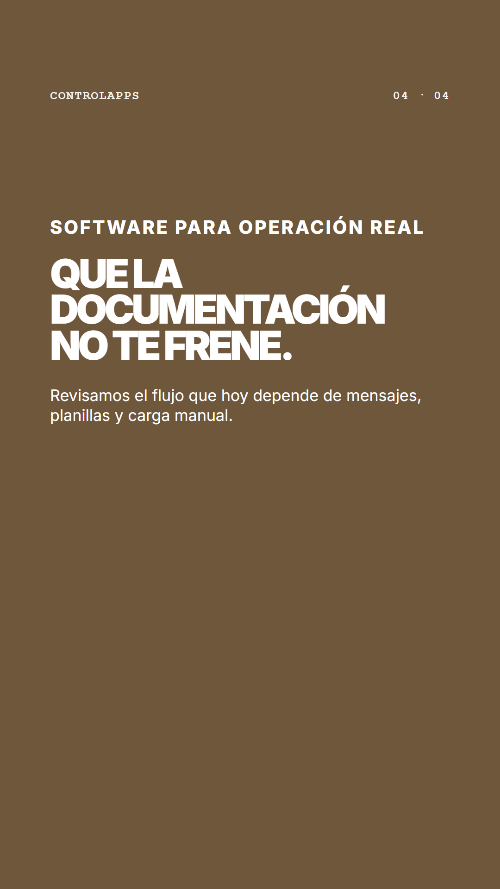

01: La tranquera
0.0 a 4.0 s
El problema se vuelve visible: gente y camionetas frenadas.

02: El costo del rechazo
4.0 a 8.0 s
PDFs rebotados se traducen en días sin facturar.

03: El circuito
8.0 a 14.0 s
Recibir, ordenar, revisar y preparar la carga antes del ingreso.

04: La salida
14.0 a 18.0 s
ControlApps cierra con una invitación directa a revisar el flujo.